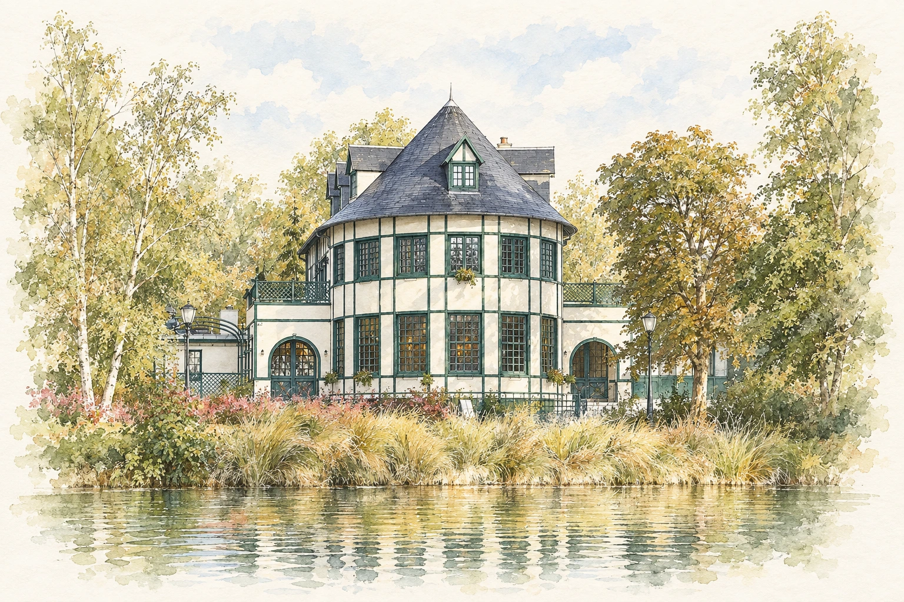

Mairie de Sartrouville
2 rue Buffon
Sartrouville
Les familles MADIOU et KIRECHE sont heureuses de vous réunir pour célébrer le mariage de leurs enfants :
15 mai 2027
On se retrouve dans…
C’est le grand jour !
Le Vésinet
Nous avons hâte de partager avec vous cette journée, entourés de tous ceux qui nous sont chers.
UN ÉCRIN DE VERDURE
Un pavillon au bord de l’eau, les arbres du parc
et vous, pour faire de cette journée un moment à part.

SAMEDI 15 MAI 2027
Cérémonie civile · Mairie de Sartrouville
Nous vous donnons rendez-vous à la mairie pour célébrer notre mariage.
Photos · Parc des Ibis
Après la cérémonie, nous invitons ceux qui le souhaitent à nous rejoindre au Parc des Ibis pour quelques photos. Profitez de ce moment pour découvrir les lieux, vous balader et partager un instant avec nous.
Pavillon des Ibis
Le moment de commencer les festivités ensemble autour d’un buffet.
Pavillon des Ibis
Jusqu’au bout de la nuit
On se retrouve sur la piste jusqu’à 3h du matin.
POUR NE RIEN MANQUER
2 rue Buffon
Sartrouville
La cérémonie civile à la mairie de Sartrouville débutera à 15h.
Entre la mairie et le cocktail, vous êtes libres de vous organiser comme vous le souhaitez. Vous pouvez nous rejoindre au Parc des Ibis à partir de 16h30 pour quelques photos et profiter des lieux avec nous.
Nous vous donnons rendez-vous à 18h30 précises au Pavillon des Ibis pour l’ouverture du cocktail et le début des festivités.
Pour la mairie : RER A – Sartrouville.
Pour la réception : RER A – Le Vésinet–Le Pecq, puis environ 5 minutes à pied jusqu’au Pavillon des Ibis.
En voiture
Un parking est accessible directement au Pavillon des Ibis.
Si le parking est complet, vous pourrez vous garer dans les rues aux alentours du parc, où des places gratuites sont disponibles.
Vous pouvez également vous arrêter devant le Pavillon des Ibis pour déposer quelqu’un.
Si la météo le permet, le cocktail et le repas auront lieu en extérieur. En cas de mauvais temps, le cocktail restera en extérieur et le repas se fera à l’intérieur.
Pensez à prévoir un petit gilet ou une veste pour la soirée.
Vous pourrez nous indiquer vos éventuelles allergies ou restrictions alimentaires dans le RSVP. Précisez le nom de chaque personne concernée.
Merci de répondre au plus tard le 31 janvier 2027.
Confirmer ma présence ↓Merci de nous répondre avant le 31 janvier 2027.
Une réponse par personne, couple ou famille.
Pour nous aider à préparer cette journée, indiquez les personnes qui vous accompagneront et vos éventuels besoins particuliers.
RÉPONSE ENREGISTRÉE
Votre réponse a bien été enregistrée. Aucun e-mail automatique n’est envoyé.